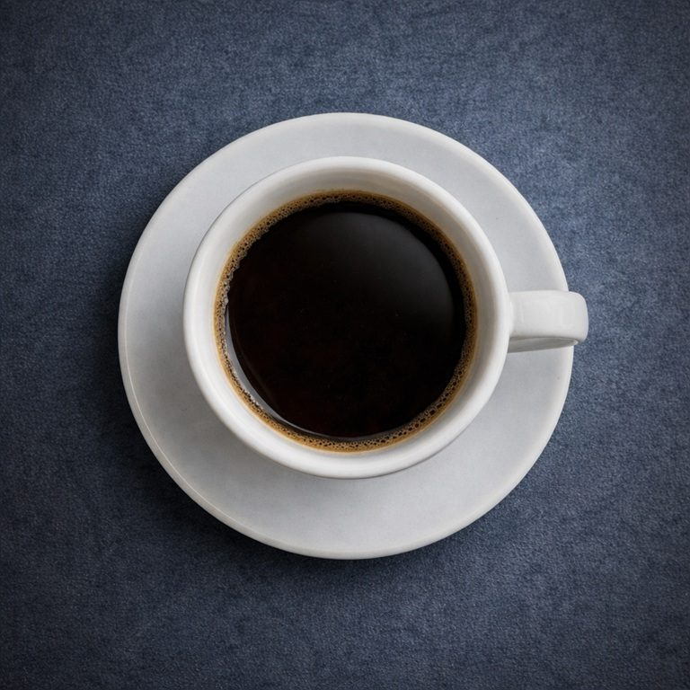

Prima parte
Seguire i tuoi passi

Ho una tazzina di caffè in mano.
Mi manca il coraggio di portarla alla bocca. Mai bevuto caffè in vita mia.
E poi ho altri pensieri.
Lui è qui, davanti a me.
Non è un sogno, è vero!
Non c’è neanche bisogno di darmi un pizzicotto per verificare.
Basta questa stupida tazzina e quel liquido nero, caldo, col suo odore intenso che mi agita solo ad annusarlo.
Ma che dico…
non è certo questo che mi agita!
Quanto ho sperato, quanto ho desiderato questo momento.
Non credevo alle mie orecchie.
Mi ha davvero chiesto: “Ti va di venire a prendere un caffè insieme stamani?”
Oddio…
mi sa che ho risposto di sì con troppa foga.
Che avrà pensato di me?
Lui ha già bevuto il suo caffè.
Parla, parla…
parla di sé, di cosa farà stasera.
Dice che ha una serata in un locale alla moda con la sua band.
A me non chiede niente, meglio così. Mi impappinerei,
farei di sicuro una delle mie tipiche figuracce.
E poi cosa potrei mai avere da dire io a lui?
Che sono l’unica scema di vent’anni a cui piace la musica classica, che si sta diplomando in flauto traverso? Che gli rispondo se mi chiede:
“Come mai proprio il flauto traverso?”
Meglio tacere
e ascoltare.
Ah…
quanto è bello vedere le sue labbra che si muovono.
Sì…
lo seguirei anche sulla luna se me lo chiedesse.
Mi sta davvero chiedendo di andare stasera ad ascoltarlo. Sento la mia bocca che prontamente risponde:
“Ma che bello, certo che vengo, non mi perderei la vostra serata per nulla al mondo!”
E intanto sento salire l’ansia, perché sicuramente non avrò nulla di adatto da mettermi. Aprirò l’armadio e starò lì, come un’ebete, a rimirare la mia collezione di indumenti da sfigata.
Persa nei miei pensieri
quasi non mi accorgo che mi ha chiesto qualcos’altro.
“Ehi Viola, ci sei? Tutto bene? Ti chiedevo perché non hai ancora bevuto il caffè, ormai sarà freddo…”
Sobbalzo.
Con le guance in fiamme bevo il caffè tutto in un fiato.
Mi va anche di traverso, ma stoicamente resisto.
Tento di ricompormi e gli rispondo:
“Tutto bene, grazie… a me il caffè piace di più freddo.”
Sulla scia della scemenza appena detta, usciamo.
Lui mi dice:
“Allora a stasera, ci conto!”
“Non mancherò, sarò lì!”
Lui si allontana.
Lo seguo con lo sguardo
e sussurro:
“…dietro di te.
Come sempre.”
Adesso ascolta il brano
Seguire i tuoi passi
La canzone non è ancora disponibile. Riprova tra poco.